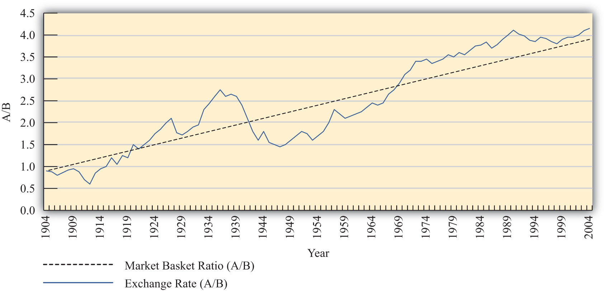
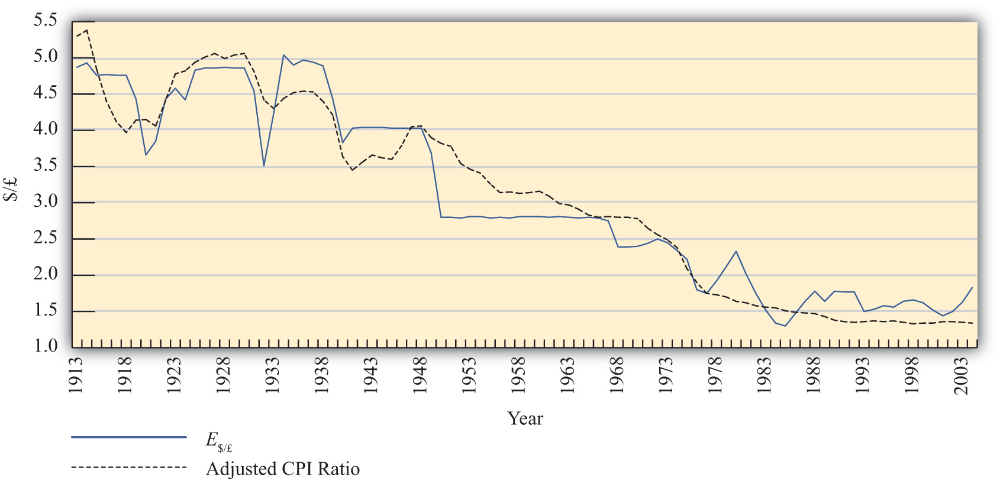

In general, the purchasing power parity (PPP) theory works miserably when applied to real-world data. In other words, it is rare for the PPP relationship to hold true between any two countries at any particular point in time. In most scientific disciplines, the failure of a theory to be supported by the data means the theory is refuted and should be thrown out or tossed away. However, economists have been reluctant to do that with the PPP theory. In part this is because the logic of the theory seems particularly sound. In part it’s because there are so many “frictions” in the real world, such as tariffs, nontariff barriers, transportation costs, measurement problems, and so on that it would actually be surprising for the theory to work when applied directly to the data. (It is much like expecting an object to follow Newton’s laws of motion while sitting on the ground.)
In addition, economists have conceived of an alternative way to interpret or apply the PPP theory to overcome the empirical testing problem. The trick is to think of PPP as a “long-run” theory of exchange rate determination rather than a short-run theory. Under such an interpretation, it is no longer necessary for PPP to hold at any point in time. Instead, the PPP exchange rate is thought to represent a target toward which the spot exchange rate is slowly drawn.
This long-run interpretation requires an assumption that importers and exporters cannot respond quickly to deviations in the cost of market baskets between countries. Instead of immediate responses to price differences between countries by engaging in arbitrage—buying at the low price and selling high—traders respond slowly to these price signals. Some reasons for the delay include imperfect information (traders are not aware of the price differences), long-term contracts (traders must wait till current contractual arrangements expire), and/or marketing costs (entry to new markets requires research and setup costs). In addition, we recognize that the exchange rate is not solely determined by trader behavior. Investors, who respond to different incentives, might cause persistent deviations from the PPP exchange rate even if traders continue to respond to the price differences.
When there is a delayed response, PPP no longer needs to hold at a particular point in time. However, the theory does imagine that traders eventually will adjust to the price differences (buying low and selling high), causing an eventual adjustment of the spot exchange rate toward the PPP rate. However, as adjustment occurs, it is quite possible that the PPP exchange rate also continues to change. In this case, the spot exchange rate is adjusting toward a moving target.
How long will this adjustment take? In other words, how long is the long run? The term itself is generally used by economists to represent some “unspecified” long period of time; it might be several months, years, or even decades. Also, since the target, the PPP exchange rate, is constantly changing, it is quite possible that it is never reached. The adjustment process may never allow the exchange rate to catch up to the target even though it is constantly chasing it.
Perhaps the best way to see what the long-run PPP theory suggests is to consider Figure 17.3 "Hypothetical Long-Term Trend". The figure presents constructed data (i.e., made up) between two countries, A and B. The dotted black line shows the ratio of the costs of market baskets between the two countries over a long period, a century between 1904 and 2004. It displays a steady increase, indicating that prices have risen faster in country A relative to country B. The solid blue line shows a plot of the exchange rate between the two countries during the same period. If PPP were to hold at every point in time, then the exchange rate plot would lie directly on top of the market basket ratio plot. The fact that it does not means PPP did not hold all the time. In fact, PPP held only at times when the exchange rate plot crosses the market basket ratio plot; on the diagram this happened only twice during the century—not a very good record.
Figure 17.3 Hypothetical Long-Term Trend
Nonetheless, despite performing poorly with respect to moment-by-moment PPP, the figure displays an obvious regularity. The trend of the exchange rate between the countries is almost precisely the trend in the market basket ratio; both move upward at about the same “average” rate. Sometimes the exchange rate is below the market basket ratio, even for a long period of time, but at other times, the exchange rate rises up above the market basket ratio.
The idea here is that lengthy exchange rate deviations from the market basket ratio (i.e., the PPP exchange rate) mean long periods of time in which the cost of goods is cheaper in one country than in another. Eventually, traders will respond to these price discrepancies and begin to import more from the less expensive country. This will lead to the increase in demand for that country’s currency and cause the exchange rate to move back toward the market basket ratio. However, in the long-run version of the theory, this will take time, sometimes a considerable amount of time, even years or more.
To see how this relationship works in one real-world example, consider Figure 17.4 "U.S./UK Long-Term Trends". It plots the exchange rate (E$/£) between the U.S. dollar and the British pound between 1913 and 2004 together with an adjusted ratio of the countries’ consumer price indices (CPIs) during the same period.A technical point: The ratio of CPIs is adjusted because the ratio of CPIs must be multiplied by the PPP exchange rate that prevailed in the base year for the two countries. However, the CPI series used has 1967 as the base year in the United Kingdom and 1974 as the base year in the United States. This would mean the CPI ratio should be multiplied by the ratio of the cost of a market basket in the United States in 1974 divided by the market basket cost in the United Kingdom in 1967. Unsurprisingly, I don’t have that information. Thus I’ll assume a number (1.75) that is somewhat greater than the actual exchange rate that prevailed at the time. The higher number may account for the fact that prices rose considerably between 1967 and 1974. In any case, it remains a guess. The adjusted ratio represents an estimate of the ratio of the costs of market baskets between the two countries.
Figure 17.4 U.S./UK Long-Term Trends
In the diagram, the dotted black line represents the estimated ratio of market basket costs and the solid blue line is the exchange rate (E$/£). Note how closely the exchange rate tracks the trend in the market basket ratio. This remains true even though the exchange rate remained fixed during some lengthy periods of time, as in the 1950s and 1960s. While this depiction is just two countries over a long period, it is suggestive that the long-run version of PPP may have some validity.
More sophisticated empirical tests of the long-run version of PPP have shown mixed results, as some studies support the hypothesis while others tend to reject it. Regardless, there is much more support for this version of the theory than for the much more simplistic short-run version.
Jeopardy Questions. As in the popular television game show, you are given an answer to a question and you must respond with the question. For example, if the answer is “a tax on imports,” then the correct question is “What is a tariff?”